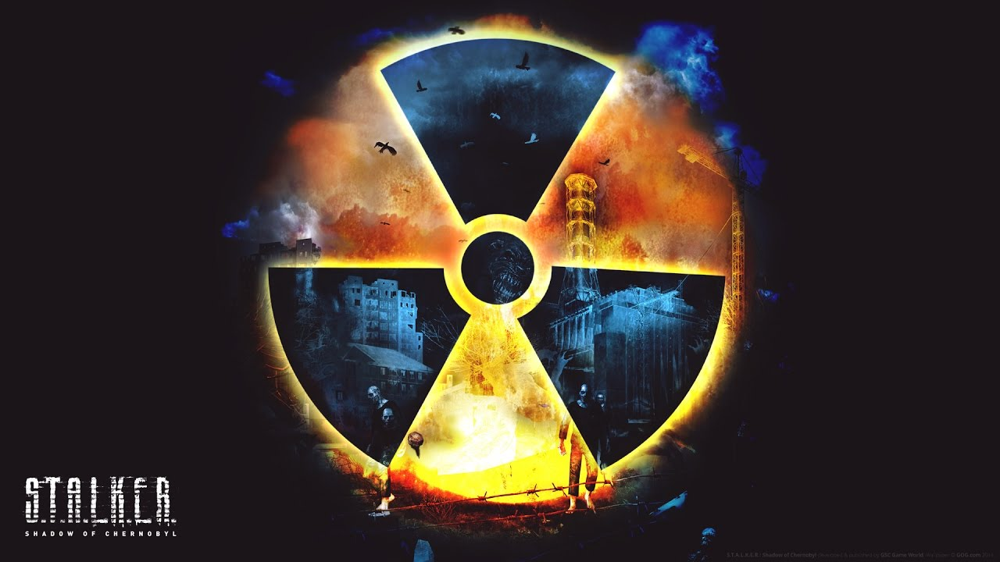
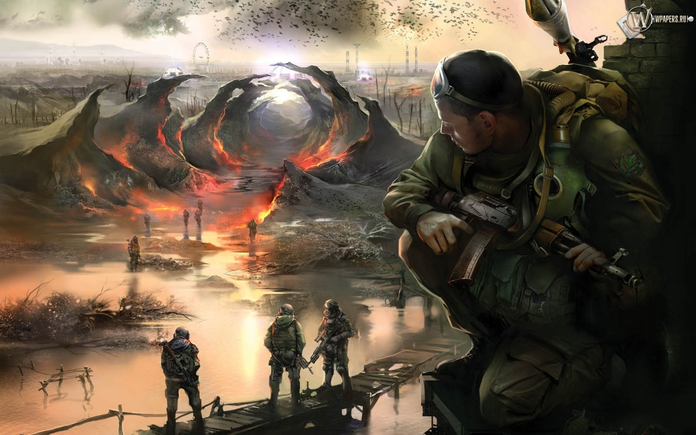
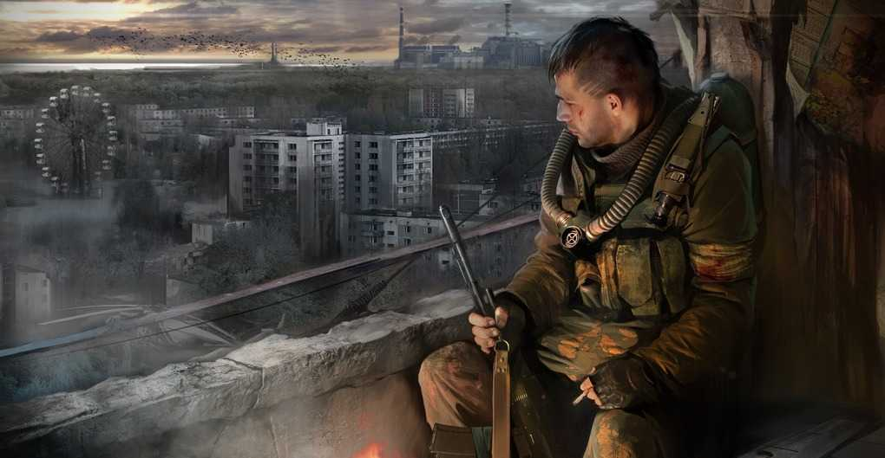

S.T.A.L.K.E.R.: Тень Чернобыля(англ. S.T.A.L.K.E.R.: Shadow of Chernobyl), ранее известный как S.T.A.L.K.E.R.: Oblivion Lost — культовая компьютерная игра, шутер от первого лица украинского разработчика GSC Game World, изданная 20 марта 2007 года в США, в Канаде и 23 марта 2007 года в Европе и СНГ.
Жанр игры производителем определяется как «Survival FPS» с элементами RPG: подразумевается, наряду с элементами обычного 3D-шутера, наличие постоянно враждебной по отношению к игроку окружающей среды, что, соответственно, должно существенно усложнять условия выживания. Кроме того, для достижения финала игрок должен выполнять различные миссии, хотя это предоставляет ему определённую свободу выбора. Основной особенностью данной серии игр являются игровые локации, созданные на основе документальных съёмок, сделанных в Зоне Отчуждения Чернобыльской АЭС.
На 24 марта 2007 года проект «S.T.A.L.K.E.R.» занимал восьмую позицию в чарте продаж для различных платформ, и первое — среди игр для РС по рейтингу британской организации ELSPA. А уже через год — 12 февраля 2008 — была предоставлена информация о тираже игры: 950 тысяч копий на территории СНГ и 700 тысяч на Западе.

S.T.A.L.K.E.R.: Чистое Небо - компьютерная игра в жанре FPS (First Person Shooter), приквел игры S.T.A.L.K.E.R.: Тень Чернобыля, разработанный компанией GSC Game World. Выход состоялся 22 августа 2008.
Предисловие
В 2011 году группа сталкеров подобралась очень близко к центру Зоны. В результате случился сильнейший Выброс, который полностью изменил Зону. Там, где ранее были безопасные территории, появлялись аномалии, в результате чего целые отряды сталкеров оказывались запертыми среди них и погибали. Вместе с тем, от аномалий освобождаются территории, о которых ранее ничего не было известно. В результате, разгорается вражда между группировками за новые территории, поля артефактов и сферы влияния. Начинается война группировок. Однако, Зона остаётся такой же нестабильной, её часто сотрясают выбросы. Эти и последующие события описывает данная игра.
Главным героем является наёмник по прозвищу Шрам. Он вёл по Болотам группу учёных, когда произошёл Большой Выброс. Все члены группы погибли, однако наёмник выжил. Он был найден на данной локации сталкерами группировки «Чистое небо» — секретной группировки, которая изучала Зону и причины её появления. Сталкеры доставили Шрама на базу группировки, где он пришёл в себя.

S.T.A.L.K.E.R.: Зов Припяти— компьютерная игра в жанре FPS (First Person Shooter) от компании GSC Game World, сиквел к игре S.T.A.L.K.E.R.: Тень Чернобыля. Выход игры состоялся 2 октября 2009 года.
Предисловие
После того, как «Выжигатель мозгов» был отключен и проход к центру Зоны оказался открыт, правительство решает провести крупномасштабную военную операцию под кодовым названием «Фарватер». Целью операции является взятие ЧАЭС под контроль военных. Военные составили детальные карты расположения аномальных полей, чтобы по безопасному маршруту дойти до ЧАЭС. Вскоре пять вертолётов из группы «Скат» с десантом на борту взяли курс на ЧАЭС.
Однако план с треском проваливается: связь с вертолётами пропала, ни один из них на базу не вернулся. Для того, чтобы узнать причину такого досадного провала миссии, Служба безопасности Украины направляет своего оперативника со стажем, в бывшем опытного сталкера, майора Александра Дегтярева в центр Зоны. Первостепенной задачей Дегтярёва является поиск пяти пропавших вертолётов, в каждом из которых содержится часть некой важной информации.
После отключения «Выжигателя мозгов» группы сталкеров начали массово подходить к центру Зоны. На местности под названием «Затон» (осушенная часть реки Припять) и в окрестностях завода «Юпитер» начали образовываться отряды вольных сталкеров и бандитов. Экспедиционные отряды «Долга» и «Свободы» также пришли на эти земли и война между ними продолжилась.
